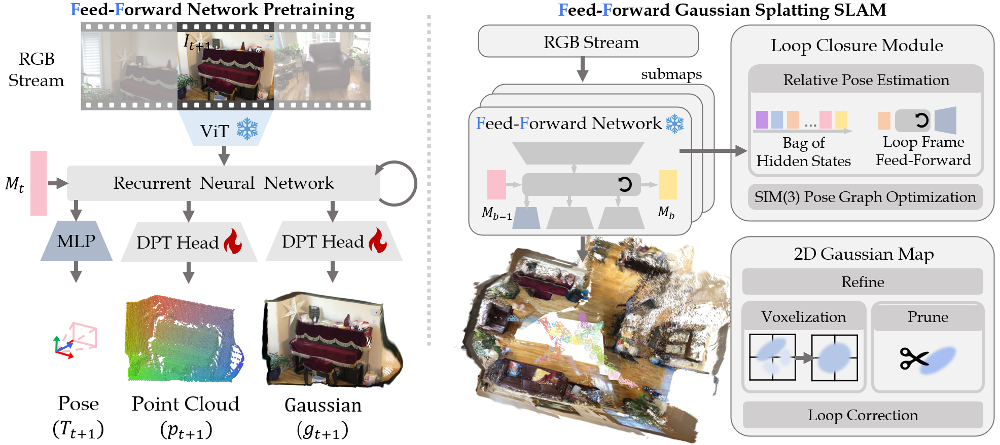
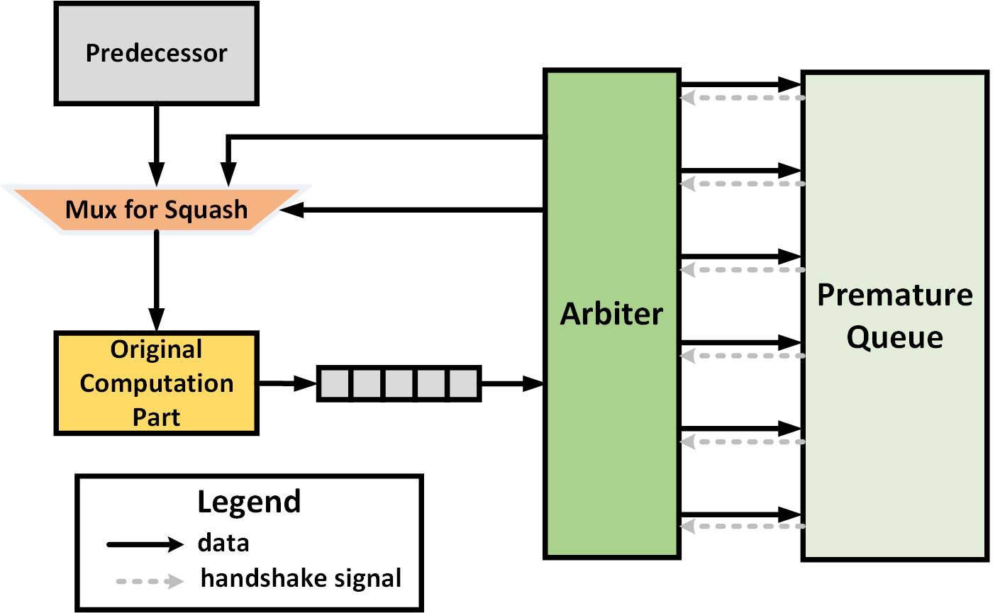

|
I'm a third-year undergraduate student at Fudan University, majoring in Artificial Intelligence. I graduated from High School Affiliated to Fudan University in 2023. My recent research interests include robotics and computer vision. I spent a wonderful time as a visiting student in Fudan MagicLab under the supervision of Professor Wenchao Ding. Currently, I'm broadening my research horizons to discover my primary area of focus. |
|  |
pdf |
abstract
Monocular 3D Gaussian Splatting SLAM suffers from critical limitations in time efficiency, geometric accuracy, and multi-view consistency. These issues stem from the time-consuming \textit{Train-from-Scratch} optimization and the lack of inter-frame scale consistency from single-frame geometry priors. We contend that a feed-forward paradigm, leveraging multi-frame context to predict Gaussian attributes directly, is crucial for addressing these challenges. We present Flash-Mono, a system composed of three core modules: a feed-forward prediction frontend, a 2D Gaussian Splatting mapping backend, and an efficient hidden-state-based loop closure module. We trained a recurrent feed-forward frontend model that progressively aggregates multi-frame visual features into a hidden state via cross attention and jointly predicts camera poses and per-pixel Gaussian properties. By directly predicting Gaussian attributes, our method bypasses the burdensome per-frame optimization required in optimization-based GS-SLAM, achieving a \textbf{10x} speedup while ensuring high-quality rendering. The power of our recurrent architecture extends beyond efficient prediction. The hidden states act as compact submap descriptors, facilitating efficient loop closure and global $\mathrm{Sim}(3)$ optimization to mitigate the long-standing challenge of drift. For enhanced geometric fidelity, we replace conventional 3D Gaussian ellipsoids with 2D Gaussian surfels. Extensive experiments demonstrate that Flash-Mono achieves state-of-the-art performance in both tracking and mapping quality, highlighting its potential for embodied perception and real-time reconstruction applications. |
|
webpage |
pdf |
abstract |
bibtex |
arXiv
VINGS-Mono is a monocular (inertial) Gaussian Splatting (GS) SLAM framework designed for large scenes. The framework comprises four main components: VIO Front End, 2D Gaussian Map, NVS Loop Closure, and Dynamic Eraser. In the VIO Front End, RGB frames are processed through dense bundle adjustment and uncertainty estimation to extract scene geometry and poses. Based on this output, the mapping module incrementally constructs and maintains a 2D Gaussian map. Key components of the 2D Gaussian Map include a Sample-based Rasterizer, Score Manager, and Pose Refinement, which collectively improve mapping speed and localization accuracy. This enables the SLAM system to handle large-scale urban environments with up to 50 million Gaussian ellipsoids. To ensure global consistency in large-scale scenes, we design a Loop Closure module, which innovatively leverages the Novel View Synthesis (NVS) capabilities of Gaussian Splatting for loop closure detection and correction of the Gaussian map. Additionally, we propose a Dynamic Eraser to address the inevitable presence of dynamic objects in real-world outdoor scenes. Extensive evaluations in indoor and outdoor environments demonstrate that our approach achieves localization performance on par with Visual-Inertial Odometry while surpassing recent GS/NeRF SLAM methods. It also significantly outperforms all existing methods in terms of mapping and rendering quality. Furthermore, we developed a mobile app and verified that our framework can generate high-quality Gaussian maps in real time using only a smartphone camera and a low-frequency IMU sensor. To the best of our knowledge, VINGS-Mono is the first monocular Gaussian SLAM method capable of operating in outdoor environments and supporting kilometer-scale large scenes.
@ARTICLE{11176433,
author={Wu, Ke and Zhang, Zicheng and Tie, Muer and Ai, Ziqing and Gan, Zhongxue and Ding, Wenchao},
journal={IEEE Transactions on Robotics},
title={VINGS-Mono: Visual-Inertial Gaussian Splatting Monocular SLAM in Large Scenes},
year={2025},
volume={},
number={},
pages={1-20},
keywords={Simultaneous localization and mapping;Visualization;Cameras;Robot sensing systems;Rendering (computer graphics);Training;Robustness;Location awareness;Optimization;Ellipsoids;SLAM;Gaussian Splatting;Sensor Fusion},
doi={10.1109/TRO.2025.3613536}
}
|
|
|  |
pdf |
abstract |
bibtex
Dynamic scheduling in high-level synthesis (HLS) maximizes pipeline performance by enabling out-of-order scheduling of load and store requests at runtime. However, this method introduces unpredictable memory dependencies, leading to data disambiguation challenges. Load-store queues (LSQs), commonly used in superscalar CPUs, offer a potential solution for HLS. However, LSQs in dynamically scheduled HLS implementations often suffer from high resource overhead and scalability limitations. In this paper, we introduce PreVv, an architecture based on premature value validation designed to address memory disambiguation with minimal resource overhead. Our approach substitutes LSQ with several PreVv components and a straightforward premature queue. We prevent potential deadlocks by incorporating a specific tag that can send 'fake' tokens to prevent the accumulation of outdated data. Furthermore, we demonstrate that our design has scalability potential. We implement our design using several hardware templates and an LLVM pass to generate targeted dataflow circuits with PreVv. Experimental results on various benchmarks with data hazards show that, compared to state-of-the-art dynamic HLS, PreVV16 (a version with a premature queue depth of 16) reduces LUT usage by 43.91% and FF usage by 33.09%, with minimal impact on timing performance. Meanwhile, PreVV64 (a version with a premature queue depth of 64) reduces LUT usage by 27.21% and FF usage by 33.10%, without affecting timing performance.
@INPROCEEDINGS{10993073,
author={Zou, Kuangjie and Zhang, Yifan and Zhang, Zicheng and Li, Guoyu and Chen, Jianli and Wang, Kun and Yu, Jun},
booktitle={2025 Design, Automation & Test in Europe Conference (DATE)},
title={PreVV: Eliminating Store Queue via Premature Value Validation for Dataflow Circuit on FPGA},
year={2025},
volume={},
number={},
pages={1-7},
keywords={Out of order;Runtime;Scalability;Circuits;Pipelines;System recovery;Dynamic scheduling;Timing;Table lookup;Field programmable gate arrays;high-level synthesis;dataflow circuits;load-store queue;FPGA},
doi={10.23919/DATE64628.2025.10993073}
}
|
|
|
I have been mentoring the robotics club at my former high school, Team 6907. We compete in the FIRST Robotics Competition (FRC), where teams design and build 125-pound, industrial-grade robots for complex challenges. I'm thrilled that we just won the championship at the 2025 FRC China Offseason!
|
|
Say hello to Nought! It plays tic-tac-toe with you. It is one of my three-day weekend projects.
|
|
|
We won RMUL 3v3 First Prize! I designed the hardware of the hero robot based on opensource designs, focusing on the development of its yaw axis joint and mobility system.
|
|
|
We won 2024 RoboCup China Second Prize! We designed an autonomous UAV platform designed for logistics and delivery in unknown, GPS-denied environments. I implemented and fine-tuned LIO-SLAM algorithm to generate real-time 3D maps of the environment for robust localization.
|